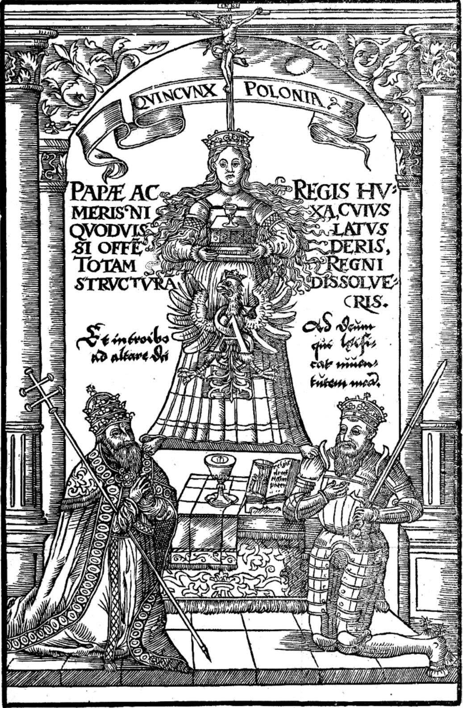

Omnis potestas a Deo

Środowisko monarchistyczne w Polsce, choć nieliczne, pozostaje wewnętrznie zróżnicowane. Wielu jego przedstawicieli przyjmuje perspektywę czysto pragmatyczną – wykazują oni wyższość jedynowładztwa jako ustroju po prostu skuteczniejszego i stabilniejszego od demokracji. Dla tej grupy często kwestią drugorzędną pozostaje to, czy dzierżącego ster państwa nazwiemy królem, dyktatorem, czy naczelnikiem. I choć my również dostrzegamy pragmatyczne walory jednowładztwa, nasze oddanie idei monarchicznej bije z zupełnie innego, głębszego źródła.
Fundamentem naszego stanowiska jest przekonanie, że ziemski ustrój polityczny musi stanowić odzwierciedlenie obiektywnego ładu rzeczywistości – praw wpisanych w naturę przez Stwórcę, a potwierdzonych w katolickim Objawieniu i Tradycji. Fundamentem i pierwszą herezją pooświeceniowego świata, która zrujnowała ów tradycyjny porządek, jest dogmat o tzw. narodzie-suwerenie. Koncepcja ta, choć współcześnie przyjmowana bezrefleksyjnie niemal przez wszystkich, jest w istocie nie do pogodzenia z teocentryczną wizją świata. W perspektywie katolickiej ostatecznym suwerenem i źródłem wszelkiego prawa jest wyłącznie sam Bóg.
Z tego powodu nasz postulat restauracji monarchii w Polsce to przede wszystkim dążenie do przywrócenia prawidłowego porządku metafizycznego i symbolicznego Rzeczypospolitej. Ustroju, który całą swoją architekturą będzie dawał świadectwo najstarszej prawdzie politycznej Europy: omnis potestas a Deo – wszelka władza pochodzi od Boga.
Kim jest król?
Współczesna polityka, ukształtowana przez dogmaty rewolucji, całkowicie odarła władzę z jej wymiaru sakralnego. Dla człowieka nowoczesnego – nierzadko nawet tego o poglądach konserwatywnych – król to zaledwie dożywotni prezydent. Jest to całkowite zafałszowanie naszego dziedzictwa. W tradycji cywilizacji łacińskiej królestwo nigdy nie było wyłącznie pragmatycznym systemem zarządzania, lecz ustrojowym odzwierciedleniem obiektywnego, boskiego ładu. Państwo stanowi w tym ujęciu organiczne przedłużenie rodziny, gdzie król zajmuje pozycję ojca narodu, sprawującego ojcowską opiekę nad powierzonym mu ludem.
Prawdziwa władza monarsza pochodzi z sakry i rytu koronacyjnego. W epoce wczesnego średniowiecza, kształtującej paradygmat katolickiej Europy, namaszczenia olejami świętymi i koronacji stanowiły akt o charakterze quasi-sakramentalnym. Zwykły śmiertelnik, klękając przed ołtarzem, wstawał z niego jako osoba o odmienionym statusem ontologicznym. Stawał się pomazańcem. Język ówczesnej teologii politycznej, precyzyjnie opisując ten proces, określał władcę mianem homo-deus (człowiek-bóg) ze względu na spływającą na niego łaskę. Ta szczególna kondycja nakładała na króla bezwzględny obowiązek bycia imitator Christi (naśladowcą Chrystusa) w doczesnym wymiarze sprawiedliwości.
Ten dwoisty charakter panującego najpełniej oddaje koncepcja „dwóch ciał króla”, obecna w myśli ottońskiej pod pojęciem Persona Gemina – osoby bliźniaczej. Zgodnie z nią, od momentu koronacji władca posiadał dwie natury. Pierwszą stanowiło jego ciało fizyczne, podlegające słabościom, namiętnościom, grzechowi i wreszcie śmierci. Drugim było jego mistyczne, polityczne ciało, które nie umierało nigdy, uosabiając majestat i ciągłość państwa. To tu bije źródło słynnej francuskiej maksymy: “Le Roi est mort, vive le Roi!”
Średniowieczny, monarszy chrystocentryzm sięgał jednak jeszcze głębiej, postrzegając uniwersalny ustrój Respublica Christiana jako bezpośrednie odbicie Trójcy Świętej. Zgodnie z tą wizją, Biskup Rzymu, dzierżący autorytet duchowy, stanowił ziemskie odbicie Boga Ojca. Namaszczony król lub cesarz, sprawujący rządy doczesne i dzierżący miecz sprawiedliwości – odbicie Syna Bożego. Z kolei nierozerwalna jedność i celowość, łącząca te dwie władze we wspólnym dziele budowy chrześcijańskiego ładu, była odzwierciedleniem Ducha Świętego. Prawowity porządek wykluczał wrogą rywalizację tronu i ołtarza; obie te władze działając na odrębnych polach stanowiły jedność niezbędną dla doczesnego pokoju i wiecznego zbawienia.
W tej legitymistycznej optyce król nie ma nic wspólnego z nowożytnym autokratą. Jego władza jest absolutna, ale wyłącznie w tym sensie, że pozostaje niepodzielna i niezależna od zmiennych kaprysów tłumu. Zarazem jednak jest to najbardziej ograniczona władza w historii – krępuje ją Tradycja, niezmienne dogmaty religijne, prawo naturalne i odpowiedzialność przed Bogiem.
Pro Fide, Lege et Rege. Filary Cywilizacji Łacińskiej
Rzym, Grecja, Kościół
Współczesna prawica nader często szafuje hasłami obrony „Zachodu” czy „europejskich wartości”, zatracając całkowicie zrozumienie, czym w istocie ów Zachód jest. Zredukowany do technologicznego dobrobytu i demoliberalnych instytucji, staje się pojęciem pustym, a wręcz szkodliwym. Aby nasza walka o restaurację tradycyjnego porządku państwowego miała sens, musimy powrócić do pojęć rygorystycznych. Z pomocą przychodzi tu Feliks Koneczny, wybitny polski historiozof, który zdefiniował cywilizację jako unikalną „metodę ustroju życia zbiorowego”. Dla nas, monarchistów i tradycjonalistów, tą naturalną, obiektywną przestrzenią, poza którą państwo skazane jest na degenerację, pozostaje wyłącznie cywilizacja łacińska.
Istotą tej cywilizacji, odróżniającą ją od wszystkich innych modeli porządkowania świata, jest bezwzględny prymat etyki nad prawem publicznym i polityką. W cywilizacji łacińskiej nie istnieje podwójna moralność. To, co jest niegodziwe w życiu prywatnym – kradzież, kłamstwo, morderstwo – pozostaje równie niegodziwe w życiu państwowym. Z tego prymatu etyki wynika unikalny dla naszego świata dualizm władzy, czyli wyraźne oddzielenie władzy państwowej od duchowej. Odrzucamy zarówno bizantyjski cezaropapizm, w którym państwo kontroluje ołtarz, czyniąc z religii wydział policji politycznej, jak i orientalne teokracje. Władza świecka i duchowa mają ze sobą harmonijnie współpracować, ale pozostają suwerenne w swoich dziedzinach, co stanowi najskuteczniejszą zaporę przed absolutystycznymi zapędami rządzących.
Kolejnym, nierozerwalnym spoiwem tego cywilizacyjnego gmachu jest personalizm. Cywilizacja łacińska jako jedyna nie traktuje człowieka jak trybiku w państwowej machinie, statystycznej jednostki czy zasobu centralnego planisty. Człowiek to osoba – byt obdarzony wolną wolą i duchowym celem. A podstawową komórką społeczną jest rodzina. To ona pierwotnie kształtuje człowieka. Aby jednak rodzina mogła zachować realną niezależność od władzy, musi dysponować trwałym fundamentem materialnym, jakim jest nienaruszalna własność prywatna. W ujęciu tradycjonalistycznym własność nie jest koncesją łaskawie przyznaną przez państwo, którą można arbitralnie opodatkować lub wywłaszczyć. Jest ona przedłużeniem ludzkiej osoby i przyrodzonym prawem, stanowiącym fizyczną barierę dla zakusów totalitarnych.
Z wolnością osoby i ochroną własności wiąże się fundamentalny dualizm prawa – wyraźne oddzielenie sfery prawa publicznego od prywatnego. Państwo nie ma prawa wkraczać swoimi regulacjami w każdą dziedzinę ludzkiego życia. Zgodnie z katolicką zasadą pomocniczości (subsydiarności), władza centralna nie powinna przejmować zadań, które mogą zostać wykonane przez niższe wspólnoty. Właściwie uporządkowane państwo monarchiczne nie jest więc scentralizowanym Lewiatanem, lecz zbiorem organicznych wspólnot: rodzin, cechów, korporacji zawodowych i silnych, oddolnych samorządów. Król spina tę konstrukcję i broni jej granic, ale nie wtrąca się w wewnętrzne życie organicznego społeczeństwa.
W tak zarysowanych ramach cywilizacyjnych kształtuje się autentyczny naród. Naród to wspólnota historyczna, duchowa i kulturowa. To związek pokoleń – zmarłych, żyjących i tych, którzy dopiero nadejdą – połączony wspólnym celem, wiarą i ziemią.
Prawo naturalne i godność człowieka
Skoro w naszej cywilizacji to etyka góruje nad polityką, stanowczo odrzucamy zgubną doktrynę pozytywizmu prawniczego. To właśnie to nowożytne kłamstwo zrównało ustawę z prawdą, a arytmetyce wyborczej nadało władzę nad dobrem i złem, prowadząc narody na manowce relatywizmu i nihilizmu. W cywilizacji łacińskiej ludzkie prawo stanowione nie może być arbitralnym wymysłem władzy – ani dyktatora, ani parlamentarnej większości. Aby w ogóle zasługiwało na miano prawa, musi stanowić wierne odbicie prawa naturalnego.
Owo prawo naturalne to obiektywny, niezmienny i uniwersalny porządek moralny, który sam Stwórca wpisał w naturę człowieka i całego wszechświata. Jak uczył św. Tomasz z Akwinu, ludzka ustawa, która stoi w sprzeczności z prawem naturalnym, traci moc wiążącą – nie jest już prawem, lecz prawnym bezprawiem, aktem instytucjonalnej tyranii. Monarcha nie jest zatem stwórcą moralności, lecz jej sługą i zbrojnym strażnikiem.
Aby jednak państwo mogło stanowić i egzekwować sprawiedliwe prawa, musi najpierw odpowiedzieć na pytanie, kim jest byt, którego to prawo dotyczy. Prawdziwy ład polityczny musi wyrastać z właściwej, katolickiej antropologii. Odrzucamy wszystkie nowożytne herezje: od oświeceniowego indywidualizmu, przez marksistowski kolektywizm, aż po współczesny biopolityczny redukcjonizm, który traktuje człowieka jak zlepek komórek lub zasób państwowy. Człowiek to integralna jedność duszy i ciała, stworzona na obraz i podobieństwo Boga.
W perspektywie chrześcijańskiej ta ludzka natura – w tym materia i ludzkie ciało – została wyniesiona do niewyobrażalnej, niepojętej wręcz godności przez sam fakt tajemnicy Wcielenia.
Państwo, które nie rozpoznaje tej prawdy – które nie respektuje ludzkiej wolności, legalizuje mordowanie bezbronnych nienarodzonych, eutanazję niedołężnych czy jakiekolwiek inne formy eugeniki i inżynierii genetycznej uderzającej w ludzką godność – przestaje być państwem cywilizowanym. Staje się technokratyczną antycywilizacją barbarzyńców. Nasz postulat restauracji monarchii jest w istocie wezwaniem do powrotu państwa, które rozumnie rozpoznaje prawo naturalne i ze wzniesionym mieczem broni świętości życia, wiedząc, że każda ludzka istota nosi w sobie godność samego Chrystusa.
Po co jest państwo?
W klasycznej myśli chrześcijańskiej państwo posiada precyzyjnie określony cel. Święty Augustyn wskazuje na jego rolę powstrzymującą: władza publiczna, w tym król jako katechon, ma tamować anarchię i gwarantować tranquillitas ordinis – spokój wynikający z należytego porządku. Fundamentem państwa jest surowa sprawiedliwość. Organizacja państwowa pozbawiona tego fundamentu, jak przestrzegał biskup Hippony, staje się jedynie wielką bandą rozbójników.
Z kolei Święty Tomasz z Akwinu akcentuje pozytywny i naturalny wymiar państwa, powołanego do realizacji bonum commune. Dobro wspólne oznacza tu zapewnienie takich warunków społecznych i materialnych, które umożliwiają obywatelom życie cnotliwe. Suweren używa swoich prerogatyw w jednym, nadrzędnym celu: by ułatwiać czynienie dobra, a utrudniać czynienie zła.
Katolicka nauka społeczna ujmuje tak pojmowane państwo w karby zasady pomocniczości. Aparat państwowy ma charakter subsydiarny względem narodu. Zamiast pochłaniać każdą sferę życia, korona spina w spójną całość organiczną tkankę rodzin, cechów i samorządów, chroniąc ich naturalną niezależność. Prawowite królestwo to tarcza osłaniająca ład moralny oraz doczesne narzędzie, ułatwiające poddanym osiągnięcie ich ostatecznego, nadprzyrodzonego celu.
Kto powinien być królem Polski?
Przedstawiliśmy już rys ideowy naszego klubu. Teraz chcielibyśmy rozważyć bardziej konkretne kwestie i potraktować je jako zaproszenie do dyskusji oraz rozrywki intelektualnej. A więc, kto powinien być królem Polski? Jest to kwestia wyjątkowo trudna dla polskiego legitymisty, ze względu na wymarcie dynastii piastowskiej oraz późniejszy, elekcyjny charakter korony polskiej. W pierwszym i słusznym odruchu zaczęlibyśmy szukać potomków królów panujących niegdyś w naszym kraju. Potomkowie ostatniego nominalnego króla Polski, Mikołaja Romanowa, nie są raczej satysfakcjonujący ze względów oczywistych, ale i formalnych – mianowicie nie są oni katolikami. Szukając dalej, okazuje się, że większość dynastii panujących w Polsce wygasła, ale zostali Wettynowie – potomkowie dwóch królów polskich: Augusta II Mocnego i Augusta III Sasa. Co więcej, dynastia Wettynów ma jeszcze dwa inne, silne źródła legitymizacji, a mianowicie fakt, że Konstytucja 3 maja na dziedzicznego króla Polski wyznaczała Fryderyka Augusta, wnuka Augusta III Sasa, oraz fakt, że był on jedynym i ostatnim władcą Księstwa Warszawskiego. Z powyższego nasze środowisko na władcę państwa polskiego typuje dzisiejszą głowę domu Wettynów albertyńskich, czyli księcia Aleksandra z Saksonii-Gessaphe. Choć dalecy jesteśmy od prymitywnych, plebejsko-nacjonalistycznych instynktów, widzimy pewną potrzebę repolonizacji rodziny prawowitego króla polskiego o korzeniach libańsko-meksykańskich. Nadzieję na realizację tego celu widzimy w polskiej arystokracji, w szczególności w rodzinie książąt Lubomirskich, która jako jedna z nielicznych odzyskała pozycję godną temu stanowi.
Część naszego środowiska patrzy też przychylnie na dynastię Habsburgów, zapewne ze względu na austro-węgierski sentyment i osobę naszego patrona: Cesarza Karola, Króla Galicji i Lodomerii, Wielkiego Księcia Krakowa, Księścia Oświęcimia, Zatoru i Cieszyna. Co ciekawe, Karol Stefan Habsburg, dziedzic Żywca, był poważnym kandydatem do tronu polskiego w 1918 roku, a także później jego kandydatura była wysuwana przez polskich monarchistów. Co więcej, to właśnie Habsburgowie Lotaryńscy mają najprawdopodobniej najwięcej krwi piastowskiej i jagiellońskiej ze wszystkich dzisiejszych dynastii europejskich.